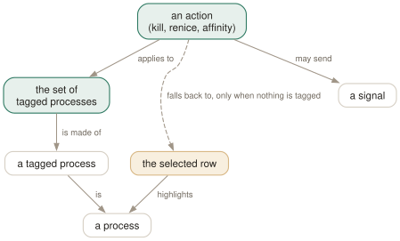

Day 06
Acting on processes
Tag, signal, renice, pin to CPUs — and the one question to ask before every one of them.
By the end of today you can
- say, before pressing any action key, exactly which processes it will hit
- send a chosen signal to a chosen set without typing a single PID
- change priority, CPU affinity and I/O class, and know which of them needs root
Ask the target question first
From here on htop stops being a viewer and starts changing your machine. Before every action key there is exactly one question worth asking, and it is not “what does this key do” — it is “what is this key about to do it to?”
The answer is always the same rule. If any process is tagged, the action applies to every tagged process. If nothing is tagged, it applies to the selected row. The cursor is the fallback, not the target.

Tagging
- Space
- Tag or untag the selected process. The row changes colour and the cursor stays put.
- c
- Tag the selected process and its children — the whole subtree, in one keystroke. Works in list view too, not only in the tree.
- U
- Untag everything.
Tagging is what makes htop faster than the shell for this kind of work. “Terminate these six workers but not the supervisor” is six presses of Space and one F9, with no PIDs typed and therefore no PIDs mistyped.
Signals
F9 or k opens a menu of every signal on the system, already positioned on 15 SIGTERM. Arrows to choose, Enter to send, Esc to escape.
Send signal: PID USER PRI NI VIRT RES PRIV S CPU%
11 SIGSEGV 74738 jhrcek 20 0 235M 10744 6424 R 3.1
12 SIGUSR2 8898 jhrcek 20 0 1460G 362M 212M R 1.4
13 SIGPIPE 5399 jhrcek 20 0 12.6G 346M 164M S 0.9
14 SIGALRM 7575 jhrcek 20 0 53.7G 823M 392M S 0.9
15 SIGTERM 7644 jhrcek 20 0 53.5G 456M 240M S 0.5
EnterSend EscCancel
That default is a small kindness. The key is labelled “Kill”, everybody reads that as SIGKILL, and htop quietly starts you on the signal that lets a process clean up after itself. Take the default unless you have a reason not to.
Priority: nice, and the wall at zero
Nice runs from −20 (greedy) to 19 (generous), and the NI column shows it. F8 or [ raises the value — makes the process nicer, lower priority. F7 or ] lowers it, and needs root.
The asymmetry is a kernel rule, not an htop one: giving away priority is always allowed, taking it back needs CAP_SYS_NICE. You can renice your own process down and then be unable to undo it without sudo.
There is a second, coarser knob beside it. } and { — Shift-F7 and Shift-F8 — change the autogroup nice value, which applies to a whole session's worth of processes at once rather than to one. It needs Linux CFS autogrouping enabled, and the AGRP and ANI columns from Day 10 show you what it is doing.
Affinity, I/O class and scheduling policy
Three more dialogs, each pinning down a different resource. All three open on the same tagged-or-selected rule.
- a — CPU affinity
- A checklist of every CPU, all ticked by default. Untick some and the process is confined to the rest. Useful for holding a noisy neighbour away from the cores your latency-sensitive thing runs on; note that it caps that process's
CPU%at 100% per remaining core. - i — I/O priority
- Classes
Realtime 0–7,Best-effort 0–7,Idle, andNone (based on nice)at the top, which is the default and derives the I/O class from the nice value. TheIO_PRIORITYcolumn displays the result asR,Boridplus a number. Undocumented in the manual page. - Y — scheduling policy
Other,Batch,Idle,FiFo,RoundRobin, and a “Reset on fork” toggle. The real-time policies need privilege and can lock up a machine if you give one to something that spins. Undocumented in the manual page.
Taking the sharp edges off
htop --readonly disables every feature that changes a process or the system. It is not a warning dialog; the capability is simply gone, and the function bar shows it — F7, F8 and F9 render blank.
$ htop --readonly
F1Help F2Setup F3SearchF4FilterF5Tree F6SortByF7 F8 F9 F10Quit
Two places it earns its keep: the htop you paste into a runbook for someone who is tired and on call, and the htop you run on a machine where you have root and do not want it. There is also --drop-capabilities, which goes further by shedding Linux capabilities outright, at the cost of some columns no longer working — this course leaves it alone, and Day 14 says where to read about it.
Today's habit
Make U part of the gesture. Not “press U when I think I might have tags”, but U immediately before every F9, the way you check a mirror before pulling out. It costs one keystroke and prevents the only genuinely bad thing htop can do to you.
Tomorrow: the six keys that open a whole screen about one process — strace, lsof, the environment, and file locks.
New vocabulary
Keys
| Key | Does |
|---|---|
| Space | Tag or untag the selected process. Tagged rows stay tagged until you clear them. |
| c | Tag the selected process and all of its children. |
| U | Untag everything. The most important key on this page. |
| F9k | Open the signal menu. Defaults to 15 SIGTERM. |
| F7] | Raise priority — lower the nice value. Root only. |
| F8[ | Lower priority — raise the nice value. Anyone can do this to their own. |
| } | Raise the autogroup priority. Shift-F7. Root only. |
| { | Lower the autogroup priority. Shift-F8. |
| a | Set CPU affinity: tick the CPUs this process may run on. |
| i | Set the I/O scheduling class and priority. Not in the manual page. |
| Y | Set the scheduling policy. Not in the manual page either. |
Commands
| Command | Does |
|---|---|
htop --readonly | Disable every process- and system-changing feature for this session. |
Drillsdo these in a real terminal, today
Self-check
Answer out loud first, then unfold.
You select a runaway process, press F9, choose SIGKILL, press Enter — and three completely unrelated services die. What did you do?
You had tagged those three earlier and forgotten. Every action key in htop follows the same rule: if anything is tagged, act on the tagged set; otherwise act on the selected row. The cursor position is a fallback, not the target.
Tags survive sorting, filtering, tree toggles and scrolling, and the only sign of them is a colour change on rows that may well be off-screen. U clears them all. Pressing U before any destructive key costs nothing and is the habit that prevents this entire class of accident.
A process is stuck in D state. You send it SIGTERM, nothing. You send SIGKILL, and it is still there a minute later. Is htop broken?
No, and neither is kill. D is uninterruptible sleep — the process is inside a kernel call that cannot be interrupted, almost always waiting on I/O from a disk or a network filesystem. Signals are delivered when a process returns to user space, and this one is not going to return until the I/O completes.
SIGKILL is not an exception: it is queued, not applied. The process will die the instant its I/O finishes or errors out. If that never happens — a hung NFS mount, a failing disk — the fix is at the storage layer, and nothing you do in htop will help. Recognising D early saves you from twenty minutes of escalating signals.
You press F7 to speed up your own process and htop refuses, but F8 to slow it down works. Why the asymmetry?
Because nice is a one-way street for unprivileged users: you may always give away priority, and you may never take it back. Raising a nice value is a concession, so anyone can do it; lowering it takes CPU from other users, so it needs CAP_SYS_NICE — in practice, root.
This catches people who renice “temporarily”. Drop your build to nice 10 to keep your desktop responsive and you cannot put it back without sudo, not even for a process you own and started yourself. Decide the nice value before you commit to it.
The manual page's INTERACTIVE COMMANDS section does not mention i or Y, yet both open dialogs. Where did they come from, and what else might be missing?
They are real, current features — i sets the I/O scheduling class and Y the CPU scheduling policy — and the manual page simply has not kept up. htop's built-in help (F1) lists both, because it is generated alongside the code rather than maintained separately.
The same is true of # (hide the header meters), e (show a process's environment) and C as an alias for Setup. The lesson generalises: for any curses program, the built-in help screen is closer to the truth than the man page, because one of them ships with the binary and the other is a separate file somebody has to remember to edit.
Cheat sheet
THE RULE: every action hits the TAGGED SET if non-empty, else the selected row.
Space tag / untag this process c tag this process AND its children
U untag everything <- press this before every F9
F9 k signal menu, starts on 15 SIGTERM (Enter sends, Esc cancels)
F8 [ nice +1 (lower priority) -- anyone, on their own processes
F7 ] nice -1 (raise priority) -- root only, always
{ } the same, for the process's AUTOGROUP (Shift-F8 / Shift-F7)
a CPU affinity: tick the CPUs it may use
i I/O class: None(nice) / Realtime / Best-effort / Idle [not in man]
Y scheduling policy: Other / Batch / Idle / FiFo / RR [not in man]
htop --readonly F7, F8 and F9 go blank; nothing can be changed
A process in D state ignores every signal including SIGKILL — it is inside a kernel call that has not returned. That is a storage problem, not a signalling problem.
Everything through Day 06
Keys
| Key | Does |
|---|---|
| Ctrl-L | Redraw the screen and recalculate, without waiting for the next tick. |
| Z | Pause and resume sampling. The screen freezes; the machine does not. |
| F10q | Quit. This is also the only exit that saves your settings. |
| UpDown | Move the selection one row. Alt-k and Alt-j do the same. |
| PgUpPgDn | Move the selection a screenful at a time. |
| HomeEnd | Jump to the first or the last process in the list. |
| LeftRight | Scroll the whole list sideways. Also Alt-h and Alt-l. |
| Ctrl-A^ | Scroll back to the start of the selected process's line. |
| Ctrl-E$ | Scroll to the end of the selected process's line. |
| Alt-UpAlt-Down | Pan the view without moving the selection. Shift-Up/Shift-Down too, if your terminal lets them through. |
| p | Toggle full program paths in Command. |
| m | Toggle merging exe, comm and cmdline into Command. |
| F3/ | Incremental search: move the selection to the next match. Does not hide anything. |
| F3 | While searching: jump to the next match. Shift-F3 goes backwards. |
| F4\ | Incremental filter: hide every row that does not match. |
| Enter | In the filter prompt: keep the filter and put the prompt away. |
| Esc | In the filter prompt: clear the filter. In search: cancel it. |
| u | Open the user menu and show only one user's processes. |
| Digits | Type a PID and the selection jumps to it. Silently — there is no prompt. |
| F6><. | Open the “Sort by” menu. All three punctuation aliases work. |
| I | Invert the sort direction. The arrow in the heading flips. |
| NPMT | Sort by PID, CPU%, MEM% and TIME. The top(1) compatibility keys. |
| F5t | Toggle tree view. The F5 label changes to List while you are in it. |
| +- | Expand or collapse the selected subtree. |
| * | Expand or collapse every subtree at once. |
| F | Follow: pin the selection to this process wherever it moves. |
| Space | Tag or untag the selected process. Tagged rows stay tagged until you clear them. |
| c | Tag the selected process and all of its children. |
| U | Untag everything. The most important key on this page. |
| F9k | Open the signal menu. Defaults to 15 SIGTERM. |
| F7] | Raise priority — lower the nice value. Root only. |
| F8[ | Lower priority — raise the nice value. Anyone can do this to their own. |
| } | Raise the autogroup priority. Shift-F7. Root only. |
| { | Lower the autogroup priority. Shift-F8. |
| a | Set CPU affinity: tick the CPUs this process may run on. |
| i | Set the I/O scheduling class and priority. Not in the manual page. |
| Y | Set the scheduling policy. Not in the manual page either. |
Commands
| Command | Does |
|---|---|
htop | Start htop, reading ~/.config/htop/htoprc once at startup. |
htop -d 10 | Sample every 10 tenths of a second. Clamped to the range 1–100. |
htop -n 5 | Draw five frames, then exit on its own. Absent from the manual page. |
htop -V | Print the version. The -v in the SYNOPSIS does not exist. |
htop -F chrome | Start with the filter already applied. Multiple terms: -F 'nginx|php'. |
htop -p 1,843 | Show only these PIDs, and nothing else ever appears. |
htop -u | Show only your own processes. |
htop -u postgres | Show one user's processes. A numeric UID works too. |
htop -s PERCENT_MEM | Start sorted by a column. Forces list view. |
htop -s PERCENT_MEM -t | Sorted and in tree view — the one way to have both. |
htop --sort-key help | Print every sortable column name and what it means. |
htop -t=soft | Tree view with a stable cursor line. classic, soft and hard, or 0/1/2. |
htop --readonly | Disable every process- and system-changing feature for this session. |
Options
| Option | Does |
|---|---|
delay | Tenths of a second between samples in htoprc. Default 15, i.e. 1.5 s. |
M_VIRT | Address space the process has mapped. VIRT. Mostly promises, not memory. |
M_RESIDENT | Pages actually in RAM, shared ones counted in full. RES. |
M_SHARE | The part of RES that other processes also map. SHR. |
M_PRIV | Resident minus shared — what dies with the process. PRIV, a default column. |
M_SWAP | Pages of this process pushed out to swap. SWAP. |
M_PSS | Resident, but each shared page divided by its number of sharers. PSS. |
M_PSSWP | The same proportional treatment for swapped-out pages. PSSWP. |
M_EPSS | PSS plus PSSWP: the whole footprint, proportionally. EPSS. |
PERCENT_MEM | RES as a share of total RAM. MEM% — and it inherits RES's double counting. |